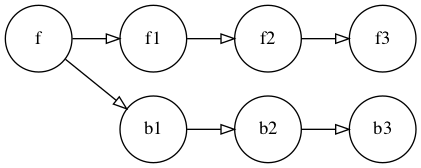
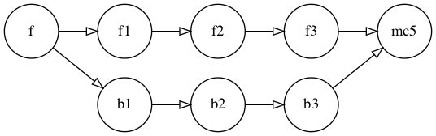
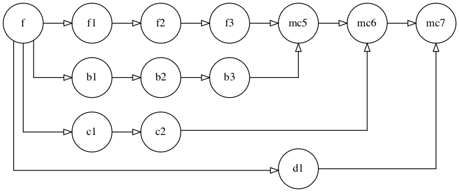
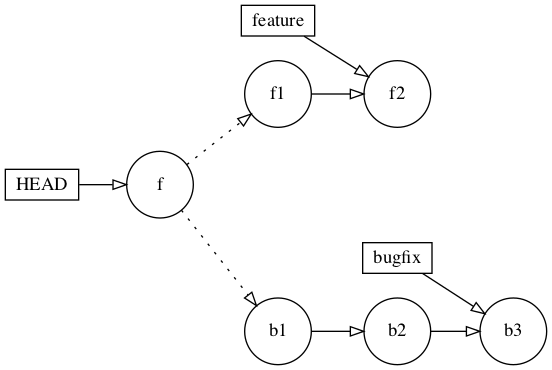
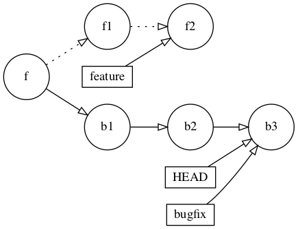
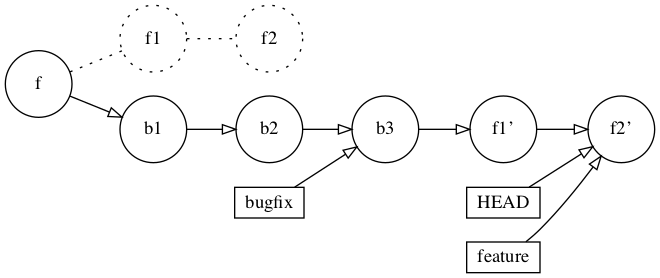

4.解密重命名¶
重放经常被误解，有时甚至被恐惧，但它是Git最强大的功能之一。重写可以有效地让你重写仓库的历史，完成一些非常复杂和高级的合并策略。
现在，重写历史听起来有些可怕，但我向你保证，你很快就会发现它比合并有很多优势。你只需要确保负责任地重写。
你为什么要重新发布？¶
当你在一个小项目上工作时，重新发布似乎没有什么意义，但当你扩大规模时，重新发布的优势就开始变得明显了。在一个只有少数几个分支和几百个提交的小仓库里，很容易理解正在使用的分支策略的历史。
但是当你有一个全球分布的项目，有几十个甚至几百个开发者，可能有几百个分支时，历史图就变得更加复杂。当你需要使用版本库的提交历史来确定某段代码何时以及如何改变时，这就特别具有挑战性，例如，当你在排除一个先前工作的功能以某种方式退步时。
由于Git的轻量级提交模式，你的历史可能会有很多分支和它们相应的合并提交。而一个仓库存在的时间越长，它的历史就越复杂。
随着从特性分支创建的分支数量的增加，合并提交的问题变得更加明显。如果你把35个分支合并到特性分支上，你的历史上就会出现35个合并提交，而这些提交除了告诉你"嘿，你在这里合并了一些东西"之外，并没有什么实际意义。
虽然这通常是有用的，但如果你的团队的开发工作流程导致了快速、狂暴和短暂的分支，你可能会从限制合并提交和重新发布有限范围的变更中受益。重新发布让你可以选择有一个更加线性的提交历史，而不是被合并提交搞得一团糟。
与抽象地谈论它相比，看到实际操作中的rebase更容易，所以你将在本章中进行一些rebase操作。你还会看到rebasing是如何帮助简化一些常见的开发工作流程情况的。
什么是重放？¶
重放本质上就是在版本库中不同的提交上重放历史上的一个或一系列的提交。如果你想简单的理解，"重放"实际上只是"替换"了一组提交的"基数"。
请看下面的情况：f提交表示一个随机的feature分支，b提交表示一个bugfix分支，目的是在不妨碍特性开发的情况下，修正或改进特性分支中的某些东西。你已经做了一些提交，现在是时候把bugfix分支的工作合并到feature上了。

如果你只是简单地将bugfix分支合并到feature，就像你通常会做的那样，那么产生的历史图表会是这样的：

mc5提交是你的合并提交。合并提交是一个熟悉的景象，合并是一个你和大多数使用Git的人都很了解的机制。但随着仓库的规模和活动的增加，你可能会有一个非常复杂的图表。

根据你正在做的工作，你可能不想让你的版本库历史显示你的分支，做了一些工作，然后把修改合并回来。当你试图理解几个月甚至几年的历史图表时，这一点额外的认知开销就开始增加了。特别是对于小的或微不足道的变化，你可能更喜欢线性的历史，而不是看到代码被分支后又被合并进来。
重新发布给你自由，避免保留分支历史和合并提交。相反，你可以将你的工作重塑为一个线性的提交进程。
回到原来的分支方案，将bugfix分支从feature中分离出来。

重命名使用一系列标准的Git操作来完成重命名。它并不像简单地移动提交内容那样简单，比如说在树状数据结构中移动节点。
假设你想让feature上的工作看起来像在bugfix上做的工作。用Git的话说，就是在bugfix的基础上重新发布feature。
Git首先会将你要重新发布的分支--在本例中是feature--回溯到它与bugfix的共同祖先。这个共同的祖先是f提交：

然后，Git会从你重新发布的分支（在本例中是bugfix）上复制每个提交的补丁，并将HEAD标签沿用：

最后，一次一个，Git应用你要重命名的分支的每个提交的补丁，在本例中是feature，并将HEAD和feature的标签一起移动：

在这一点上，你不再有对那些来自feature分支的原始提交的任何真正参考。Git最终会收集这些无主的提交（或称为"松散"对象），并在常规的垃圾回收过程中将其清理。尽管这些被遗弃的提交仍然"知道"它们的父辈是谁，但你不会看到这些提交在历史图中出现。
这就像这些提交从未存在过一样。这就是Git rebase的整个理念的来源，从字面上看，它是在重写历史。就所有的意图和目的而言，任何查看仓库的人都没有理由相信你一开始就没有在feature上做过这些提交。
重要的是要理解，Git在这里不仅仅是移动提交；它实际上是根据分支中每次提交时计算的补丁内容来创建一个全新的提交。
Note
只有当你所在的分支不与其他人共享时，才选择重写，因为，你又一次改写了版本库的历史。如果你一定要在共享的分支上重写，你就必须协调你的团队。如果在你开始工作之前，每个人都向该分支推送了任何和所有的修改，并在本地删除了它，这将会比较容易。否则，你会有一个糟糕的时间。
创建你的第一个rebase操作¶
首先，你可以继续使用前一章的项目，或者使用本章starter文件夹中的项目。
你将在wValidator上创建一个极其微不足道的分支，在该分支上做一个改动，然后在你的分支上重写wValidator。
首先，签出wValidator分支：
git checkout wValidator
接下来从wValidator创建一个名为cValidator的新分支：
git checkout -b cValidator
接下来，打开README.md，在# Maintainers部分的最后加上Chris：
# Maintainers
This project is maintained by teamWYXZ:
- Will
- Yasmin
- Xanthe
- Zack
- Chris
保存你的修改并退出编辑器。
现在，将你的修改分阶段进行：
git add .
并以适当的信息提交你的阶段性修改：
git commit -m "Added Chris as a new maintainer to README.md"
在这一点上，你有一个分支cValidator，其中包含对 README.md 的修改。现在，你想模拟有人在 wValidator 分支上创建更多提交。
切换回wValidator分支：
git checkout wValidator
打开README.md，在# Maintainers部分的团队名称后面加上Chris的首字母C：
# Maintainers
This project is maintained by teamWYXZC:
(有点像字母汤，就是这样："teamWXYZC"。你应该向团队请愿，希望有一天能得到一个非常酷的名字。但那是以后的事了）。
保存你的修改并退出编辑器。
现在你将阶段性地提交你的修改，然而你将使用git add .和git commit -m而不是分别使用git commit -am。提醒一下，唯一的区别是，git commit -am不会提交新添加的文件。
运行下面的程序来阶段性地提交你的修改：
git commit -am "Updated team acronym to teamWYXZC"
以图形的形式快速看一下资源库的当前状态：
git log --oneline --graph --all
最上面的三行告诉你什么是什么：
* 9f5e491 (HEAD -> wValidator) Updated team acronym to teamWYXZC
| * 7f754d4 (cValidator) Added Chris as a new maintainer to README.md
|/
* 3574ab3 (origin/wValidator) Whoops—didn't need to call that one twice
你有一个单独的分支cValidator的提交，你想将wValidator重新建立在其上。虽然你可以像往常一样用合并提交来合并，但其实没有必要，因为这个改动很小，而且每个分支的改动都很微不足道，相互之间也有联系。
要在cValidator的基础上重新建立wValidator，你需要在wValidator分支上。因为你现在已经在那里了，所以用下面的命令执行重建：
git rebase cValidator
Git会显示一点输出，告诉你它在做什么：
Successfully rebased and updated refs/heads/wValidator.
正如预期的那样，Git将HEAD回溯到共同的祖先，即上图中的3574ab3提交。然后，它将你所在的分支--即被重构的分支--的每一个提交都应用到你要重构的分支的末端。在这种情况下，Git唯一需要应用的wValidator的提交是9f5e491 - Updated team acronym to teamWYXZC。
看一下历史图，通过执行以下内容，可以看到最终结果：
git log --oneline --graph --all
你会在图的顶部看到下面的线性活动：
* 0e84d2b (HEAD -> wValidator) Updated team acronym to teamWYXZC
* 7f754d4 (cValidator) Added Chris as a new maintainer to README.md
* 3574ab3 (origin/wValidator) Whoops—didn't need to call that one twice
为了了解情况，你可以看一下本章开头的简单图表，以直观地了解这里发生的事情。但这里是逐一向你展示每个步骤的玩法：
Git回溯到共同的祖先（3574ab3）。- 然后，
Git在共同的祖先之上重放了cValidator分支的提交（在本例中，只有7f754d4）。 Git在7f754d4上留下了分支标签cValidator。- 然后
Git在cValidator的提交之上重放wValidator的补丁，并将HEAD和wValidator的标签移到该分支的顶端。
你不再需要cValidator分支了，在版本库中保留这个标签也没有意义，所以用下面的命令清理一下吧：
git branch -d cValidator
话说回来，你注意到提交哈希值的不同了吗？
- 更新团队缩略语到
teamWYXZC的旧提交：9f5e491。 - 更新团队缩略语到
teamWYXZC的新提交：0e84d2b。
它们之所以不同，是因为你在wValidator的顶端看到的是一个全新的提交--而不仅仅是粘在分支末端的旧提交。
你可能想知道那个旧的提交去哪了，你会在本章中进一步挖掘这些细节，因为你会研究一个更常见的场景，你会遇到并解决重构冲突。
一个更复杂的回溯¶
让我们回到我们的Magic Square开发团队。有几个人一直在开发Magic Squares应用；尤其是Will一直在开发wValidator这个分支。
Xanthe从Will的wValidator分支中分离出来，从事一些重构工作，现在是时候把所有东西带回wValidator分支了。
要想只看这两个分支的历史，而不是所有分支的历史，你可以在前面的git log --oneline --graph命令中输入分支名称，而不是--all。因此，该命令应该是 git log --oneline --graph wValidator xValidator。然而这并不完全有效，因为你没有检查出xValidator分支的本地副本。
所以你有两个选择。你可以签出一个xValidator的本地副本，或者直接使用origin/xValidator的远程跟踪分支。
你不一定需要一个本地的xValidator分支，反正最后你会删除它，所以你就直接使用origin/xValidator远程跟踪分支的日志和rebase命令。
运行下面的命令，看一下两个分支的历史记录。
git log --oneline --graph wValidator origin/xValidator
下面是存储库历史在这一点上的样子：
* 0e84d2b (HEAD -> wValidator) Updated team acronym to teamWYXZC
* 7f754d4 Added Chris as a new maintainer to README.md
* 3574ab3 (origin/wValidator) Whoops—didn't need to call that one twice
* 43d6f24 check05: Finally, we can return true
| * 8ef01ac (origin/xValidator) Refactoring the main check function
| * 5fea71e Removing TODO
|/
* bf3753e check04: Checking diagonal sums
.
.
.
从这里可以看出，两个分支的共同祖先是bf3753e。从那时起，wValidator有四个提交，origin/xValidator有两个提交。
虽然你可以把Xanthe的工作都合并到Will的分支里，但你最终会有一个合并提交，并使历史记录变得混乱。而且，从概念上讲，在这种情况下重构是有意义的，因为Xanthe所做的重构是在Will工作的逻辑背景下进行的，所以你可以让这些工作看起来都发生在一个共同的分支上。
现在，用git rebase命令开始重构操作，在这里你要说明你想把当前分支重构到哪个分支上：
git rebase origin/xValidator
你会看到下面的合并冲突，你将在下一节学习如何解决。
Auto-merging js/magic_square/validator.js
CONFLICT (content): Merge conflict in js/magic_square/validator.js
error: could not apply 43d6f24... check05: Finally, we can return true
Resolve all conflicts manually, mark them as resolved with
"git add/rm <conflicted_files>", then run "git rebase --continue".
You can instead skip this commit: run "git rebase --skip".
To abort and get back to the state before "git rebase", run "git rebase --abort".
Could not apply 43d6f24... check05: Finally, we can return true
解决错误¶
在git rebase输出的第二行，你会看到js/magic_square/validator.js中存在一个合并冲突。
在编辑器中打开js/magic_square/validator.js，你会看到你需要解决的冲突。
你会看到冲突标记之间有三段代码：
<<<<<< HEAD
Section 1: Xanthe's changes from origin/xValidator
|||||| parent of 43d6f24
Section 2: Code before changes in the common ancestor
======
Section 3: Will's changes on wValidator
>>>>>> 43d6f24
第一节：Xanthe的改动¶
第一节中<<<<<<< HEAD和||||||| parent of 43d6f24之间的行是Xanthe从origin/xValidator分支中重构的修改。
你可能会在这里感到困惑。如果HEAD表示你所在分支的顶端，而你在开始重构之前是在wValidator上，为什么这些显示的是Xanthe的origin/xValidator分支的变化？
这是因为在重构的情况下，HEAD首先被移到你重构的分支的顶端，也就是origin/xValidator分支。
当Git将每次提交复制到该分支时，HEAD会随着每次复制的提交一起移动。
第2节：修改前的代码¶
43d6f24的父分支|||||||和=======之间的中间部分是两个分支修改相同代码之前的样子。43d6f24的父分支是bf3753e，这就是那次提交时的代码情况。
还记得你之所以看到这个额外的部分，是因为第二章中通过git config merge.conflictstyle diff3命令设置了diff3冲突风格。
第三节：威尔的修改¶
Will的修改在第三节，在=======和>>>>>>>冲突标记之间。如果你仔细看一下最后的冲突标记，你会发现它还告诉你冲突发生在哪个提交：
>>>>>>> 43d6f24 (check05: Finally, we can return true)
对于复杂的合并冲突，这一点额外的信息可能相当有用。
解决冲突¶
在这种情况下，你想保留Xanthe分支上的修改。保留第一部分的代码，即<<<<<<< HEAD和||||||| parent of 43d6f24之间的行，删除其他两部分，以及所有的冲突标记。
当你完成后，返回到命令行，用下面的命令继续重定位：
git rebase --continue
哦，但Git不会让你继续。它给你的信息如下：
js/magic_square/validator.js: needs merge
You must edit all merge conflicts and then
mark them as resolved using git add
同样，因为你是在一个提交的范围内工作，你需要对这些变化进行分阶段处理。Git每次都会对每个原始提交进行重命名，所以你需要逐一处理并添加每个提交决议中的更改。
执行下面的命令，将这些修改分阶段继续进行：
git add .
然后继续重新建立基地：
git rebase --continue
但是，令人沮丧的是，Git仍然不会让你继续：
Auto-merging js/magic_square/validator.js
CONFLICT (content): Merge conflict in js/magic_square/validator.js
error: could not apply 3574ab3... Whoops—didn't need to call that one twice
Resolve all conflicts manually, mark them as resolved with
"git add/rm <conflicted_files>", then run "git rebase --continue".
You can instead skip this commit: run "git rebase --skip".
To abort and get back to the state before "git rebase", run "git rebase --abort".
Could not apply 3574ab3... Whoops—didn't need to call that one twice
这也是Git显得完全愚蠢的一个例子。难道Git不知道你刚刚运行了git add吗？难道它不知道你刚刚解决了这些提交吗？糟糕的Git。
随意发泄一下，然后仔细看一下冲突信息。在第三行，你会看到它说could not apply 3574ab3... Whoops—didn’t need to call that one twice，而之前的冲突是43d6f24... check05: Finally, we can return true。
所以这实际上是不同提交中的一个新冲突。
在这种情况下，你也要逐字保留Xanthe的修改，完全不考虑Will的修改。
虽然你可以做与之前相同的事情，但实际上有一个更简单的方法，那就是逐字接受HEAD的提交，也就是Xanthe的提交，不做任何修改，同时丢弃所有与之冲突的提交的修改。
执行下面的命令可以完全跳过应用3574ab3 - Whoops—didn’t need to call that one twice的提交：
git rebase --skip
然后，Git继续尝试应用第二个提交：
Successfully rebased and updated refs/heads/wValidator.
至此，这段令人沮丧却又充满启迪的Git重构之旅就结束了。
为了从Git的角度看你的工作成果，再看一下这两个分支的历史图吧：
git log --oneline --graph wValidator origin/xValidator
你会看到以下内容：
* ed0c808 (HEAD -> wValidator) Updated team acronym to teamWYXZC
* d1ff29f Added Chris as a new maintainer to README.md
* 8ef01ac (origin/xValidator) Refactoring the main check function
* 5fea71e Removing TODO
* bf3753e check04: Checking diagonal sums
你会看到wValidator的两个冲突的提交已经消失了（短散列43d6f24和3574ab3的提交）。你基本上跳过了这两个提交。你跳过了第一个，只保留了Xanthe的修改，你用git rebase --skip命令跳过了第二个。
那么这是否意味着你也可以在第一个冲突中运行git rebase --skip？是的！这意味着你可以在第一个冲突中也运行git rebase --skip。下次你看到自己只是逐字保留了HEADcommit中的修改，你会记得你可以直接运行git rebase skip。
你也可以看到Xanthe的两个提交（5fea71e和8ef01ac）现在整齐地夹在共同的祖先bf3753e和你对 README.md 的更新之间了。
如果你只是做了一个简单的合并，你还是会在repo的历史中看到它们。例如，如果你在wValidator分支上运行了git merge origin/xValidator，历史会是这样的：
* 44194fa (HEAD -> wValidator) Merge remote-tracking branch 'origin/xValidator' into wValidator
|\
| * 8ef01ac (origin/xValidator) Refactoring the main check function
| * 5fea71e Removing TODO
* | 0e84d2b Updated team acronym to teamWYXZC
* | 7f754d4 Added Chris as a new maintainer to README.md
* | 3574ab3 (origin/wValidator) Whoops—didn't need to call that one twice
* | 43d6f24 check05: Finally, we can return true
|/
* bf3753e check04: Checking diagonal sums
看这个会很混乱，因为你仍然会在历史中看到原来的43d6f24和3574ab3提交，这些提交在44194fa合并提交的冲突解决中基本上被取消了。
如果你没有重写Chris的更新，cValidator分支就会显得更加混乱!
* 96f42e3 (HEAD -> wValidator) Merge remote-tracking branch 'origin/xValidator' into wValidator
|\
| * 8ef01ac (xValidator) Refactoring the main check function
| * 5fea71e Removing TODO
* | b567a15 Merge branch 'cValidator' into wValidator
|\ \
| * | 9443e8d (cValidator) Added Chris as a new maintainer to README.md
* | | 76bacc5 Updated team acronym to teamWYXZC
|/ /
* | 3574ab3 Whoops—didn't need to call that one twice
* | 43d6f24 check05: Finally, we can return true
|/
* bf3753e check04: Checking diagonal sums
被遗弃的提交¶
尽管跳过的提交不再显示在日志中，但如果你还有这些提交的原始哈希值，你还是可以找到这些提交。
执行下面的命令可以看到三个提交，从"Whoops-didn't need to call that one twice"的3574ab3提交开始：
git log --oneline -3 3574ab3
这显示了wValidator分支的原始历史，从3574ab3开始，正如你在开始重新发布之前所理解的那样：
3574ab3 (origin/wValidator) Whoops—didn't need to call that one twice
43d6f24 check05: Finally, we can return true
bf3753e check04: Checking diagonal sums
但这些提交在哪里呢？从本质上讲，这些提交是孤儿，或者说是Git所说的"松散"。除了在Git内部日志中提到，它们不再被仓库树的任何部分所引用。
你可以看到该对象仍然存在于.git目录中：
git cat-file -p 3574ab3
Git会返回提交的元数据：
tree 1b4c07023270ed26167d322c6e7d9b63125320ef
parent 43d6f24d140fa63721bd67fb3ad3aafa8232ca97
author Will <will@example.com> 1499074126 +0700
committer Sam Davies <sam@razeware.com> 1499074126 +0700
Whoops—didn't need to call that one twice
但正如你在上面的仓库历史树上看到的，那个实际的提交不再被引用。它只是在那里坐着，直到Git做它通常的垃圾回收，在这一点上，Git会物理性地删除任何已经挂在那里太久的松散对象。
Note
在运行垃圾回收时，Git通常会尽可能地偏执。它不会清理每一个发现的松散对象，因为有可能你犯了一个错误，而真正需要那个提交的代码。
事实上，即使该提交没有被引用到任何地方，只要你从日志中知道该提交的哈希值，你仍然可以检查它并使用里面的代码。所以，Git，就像所有好的开发者一样，会把这些文件保留一段时间......，以防你以后需要它们。谢谢你，Git!
合并与重放¶
尽管你的开发团队的政治和目标将决定你对合并和重命名的方法，这里有一些实用的提示，说明什么时候重命名可能比合并更合适，反之亦然。
- 当以线性方式分组的修改在上下文中是有意义的，比如上面
Will和Xanthe的工作包含在同一个文件中时，选择重放。 - 当你创造了重大的变化时，比如在拉动请求中添加了一个新的功能时，选择合并，这时分支策略会给历史图提供背景。合并提交会有两个共同祖先的历史，而重定则会删除这一点背景信息。
- 当你有一个混乱的本地提交或本地分支历史，你想在推送前清理一下的时候，可以选择重新发布。这涉及到所谓的
squashing，你会在后面的章节中提到。 - 当有一个复杂的历史图不影响你的团队的日常功能时，选择合并。
- 当你的团队经常需要通过历史图来弄清楚谁在什么时候改了什么的时候，你可以选择重新建立。随着时间的推移，这些合并提交会越来越多。
在Git中，围绕着重命名有一段很长的政治历史，但希望你已经看到，它只是你武器库中的另一个工具。重命名在本地未推送的分支中最有用，可以清理不可避免的混乱的编码工作。
但你只是开始了你的重塑之旅。在下一章，你将学习interactive rebasing，在这里你可以真正地改写整个版本库的历史，一次一个提交。
挑战：在另一个分支的基础上进行重构¶
你发现Zach也在zValidator分支上对范围检查函数进行了一些重构。
运行以下程序，看看这两个分支之间的关系：
git log --oneline --graph wValidator origin/zValidator
你会看到，在origin/zValidator上，在它从wValidator分支后有一个提交：
...
* 64b1b51 check02: Checking the array contains the correct values
| * 136dc26 (origin/zValidator) Refactoring the range checking function
|/
* 665575c util02: Adding function to check the range of values
你的挑战是将你在wValidator分支上所做的工作重新放在Zach的zValidator分支之上。同样，这里的共享环境和有限的修改范围意味着你不需要合并提交。
别担心，你不需要解决任何合并冲突!
如果你需要帮助，或者想确定你是否做对了，你可以在本章的challenge文件夹中找到解决方案。
关键点¶
- 重放"复制"一个分支的提交到另一个分支上。
- 当你想保持版本库历史的线性，并尽可能不受合并提交的影响时，重放是一种比合并更好的技术。
- 要在另一个分支上重设分支，执行
git rebase <另一个分支名>。 - 你可以像解决合并冲突一样，解决重建冲突。
- 要在解决冲突后恢复重写操作，执行
git rebase --continue。 - 要跳过在当前分支上的提交，执行
git rebase --skip。